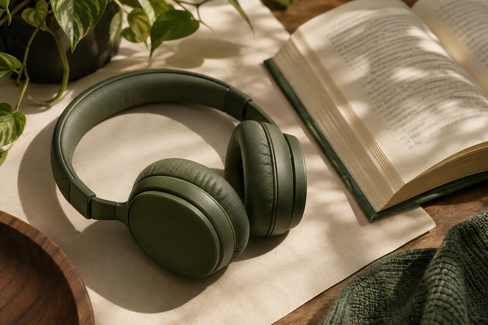

LEÉ CON LOS OÍDOS
Las palabras,
a tu ritmo.
Pegá ese artículo largo, el apunte o el capítulo que venís pateando, elegí una voz de tu dispositivo y dale play. VozClara te lo lee oración por oración mientras descansás la vista.
- Sin cuentas
- Tus textos quedan en este navegador
- Archivos .txt y .md
Un ratito para vos.
Menos pantalla. Más imaginación.Sin cuentas. Sin distracciones.
TUS PALABRAS, A MANO
Biblioteca
Volvé a esos textos que vale la pena escuchar.
HACÉ TUYO ESTE ESPACIO
Ajustes
Pequeños detalles para escuchar a gusto.

Tu forma de leer
La voz, el tono y la velocidad se recuerdan automáticamente.
Un espacio privado
Tus textos se guardan solamente en este navegador. No necesitás crear una cuenta.
Las voces locales funcionan sin internet. Algunas voces del sistema necesitan conexión.